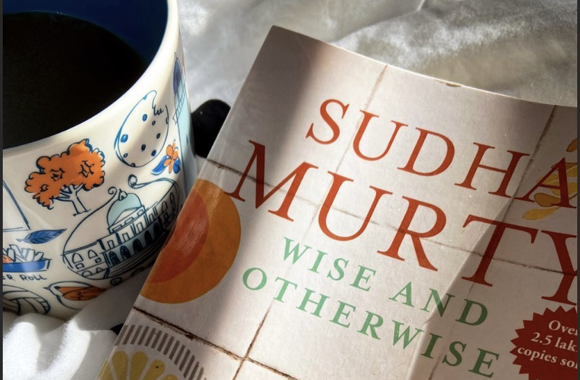
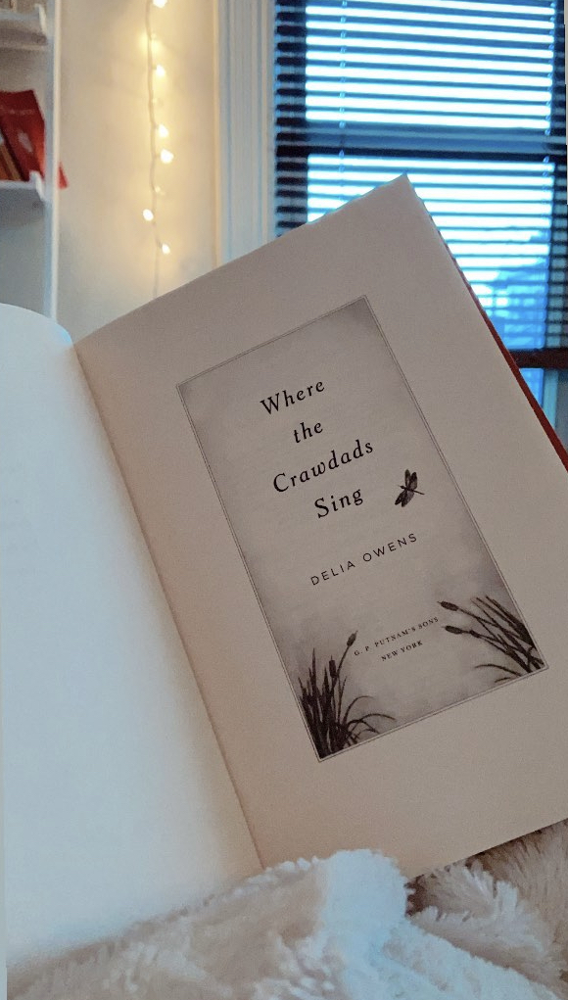
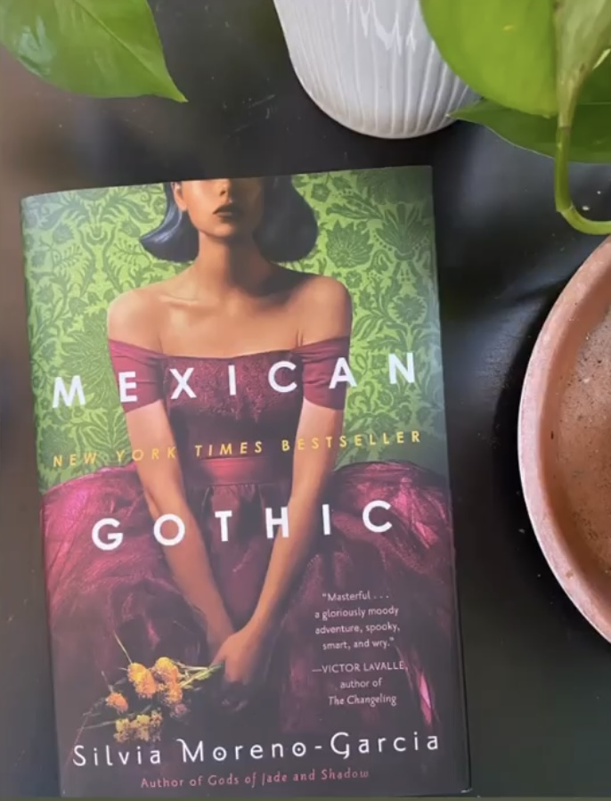

Zero to Sixty, Just Like That

Whenever I am asked about the reading challenge that I have started, my mind automatically goes straight to Hercules (the Disney version, of course). My hips start swaying, my shoulders start shaking and suddenly I’m singing, “zero to hero, in no time flat. zero to hero, just like that.” While I may not be going from being a zero to being the hero of ancient Greek mythology, I did go from reading zero books to reading sixty in a year. I went from reading only the first and last sentences of texts that were too long, to carrying a book in my purse and sneaking a chapter or two in at a red light. So, though I haven’t become a hero of mythological proportions, I have become my own sort of literary hero (because I was almost certain that I wouldn’t actually be able to complete this challenge). While, I will admit that the time I spent reading at red lights was more often because I needed to use every single extra minute I had in order to meet the deadlines required for this challenge as opposed to reading for the pure joy of reading, this sixty book challenge helped me to accomplish exactly what I had wanted to - a renewed love for reading.
It’s not that I have never loved to read; it’s just that as time has passed, other hobbies have taken priority (and by other hobbies, I mean scrolling instagram) and with the pandemic providing the time to watch entire series in a single day, reading sort of fell by the wayside. So, I decided to read sixty books in an attempt to make up for all of the time lost to Netflix.

Just kidding.
I actually got the idea from a friend who suggested that having an accomplishable goal might make the loneliness and fear that I was feeling after moving home from being abroad in the middle of a pandemic and (just so happened to be) fueling all of my ice cream filled Netflix binges, a little more manageable. She suggested mastering a new language, but getting back into reading felt much more (actually) accomplishable. Plus, I had a bookshelf full of books yet to be read and I (and everyone else) had nowhere to go.
So, I started.
And I am so glad I did.

In the heart of quarantine, these books became an escape, a much-needed adventure and an understanding confidant. It was a conversation starter during a time when starting conversations was a little harder (online dating during a pandemic, you’ll take any conversation starter you can get) and a conversation continuer for friends who had become distant but wanted to give or get recommendations. And, most importantly, it gave a purpose to my days that had felt empty and unending since my return to the States. It became a way for me to recognize the life I wanted to live, live the lives I can’t live while living this one and live lives that I now know I would never want to live. These sixty books revealed a glimmer of the majestic potentiality of the world around me both in this life I am living and the lives I won’t have time for.